What I Offer
From concept to completion, I design cozy, functional, and aesthetically pleasing interiors that reflect your personality and style.
I specialize in creating homely spaces for renters and homeowners, bringing warmth, elegance, and comfort into every project.
Whether it's a compact apartment or a luxury suite, I tailor every detail to suit your needs and budget.


Space Planning
Color Consultation

 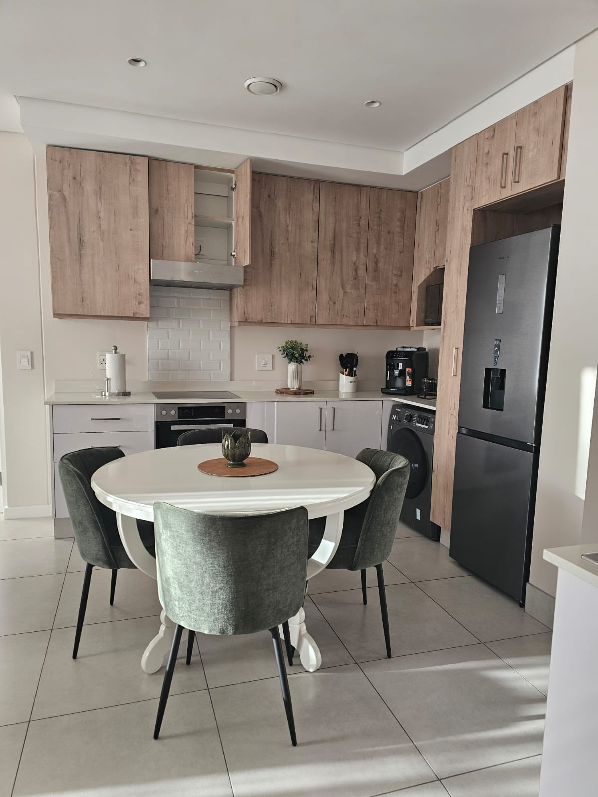
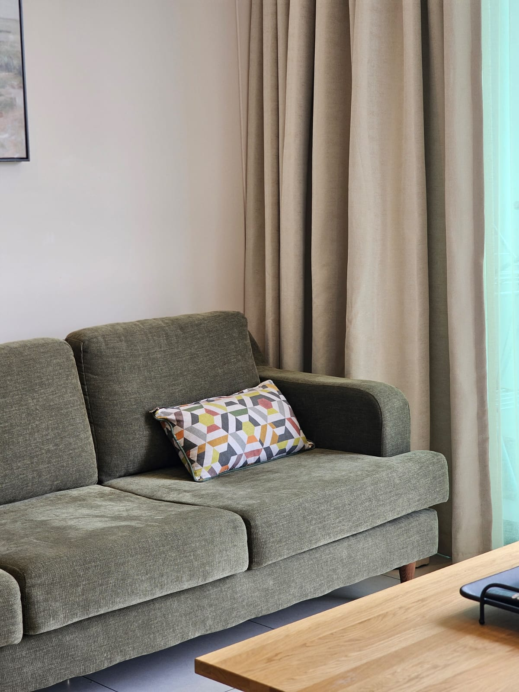
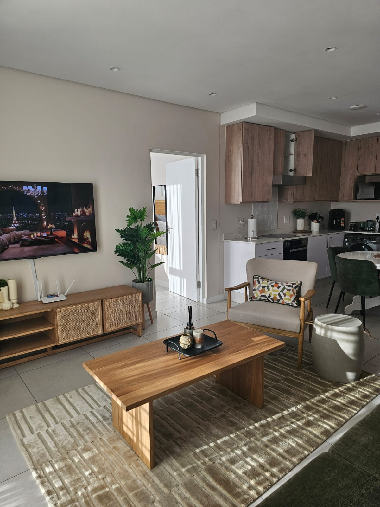
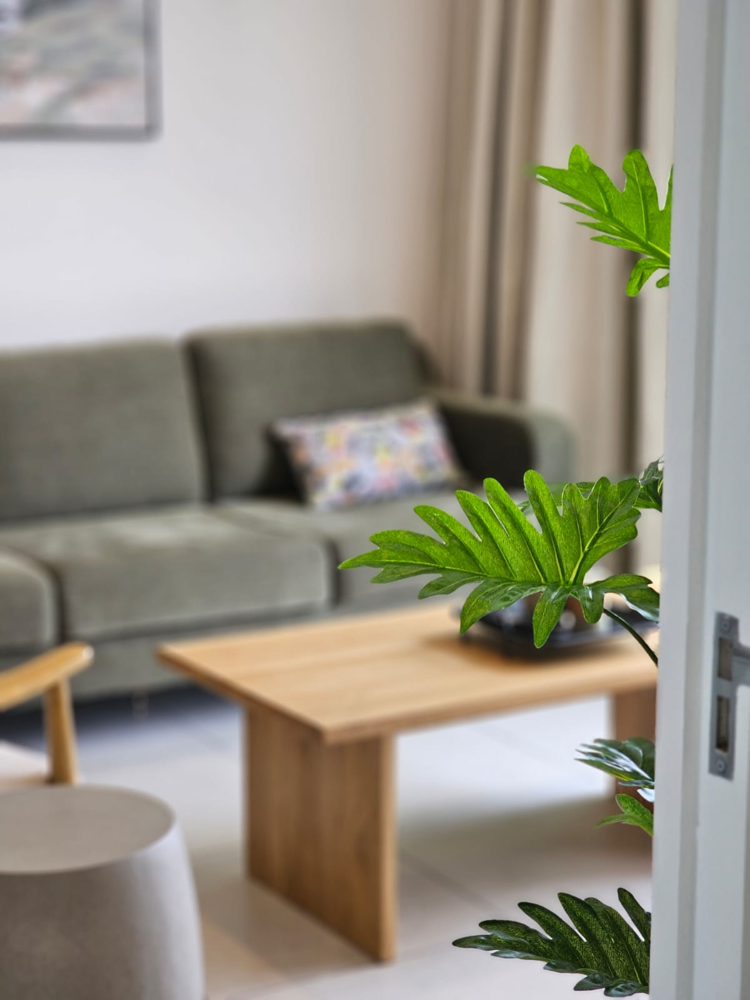
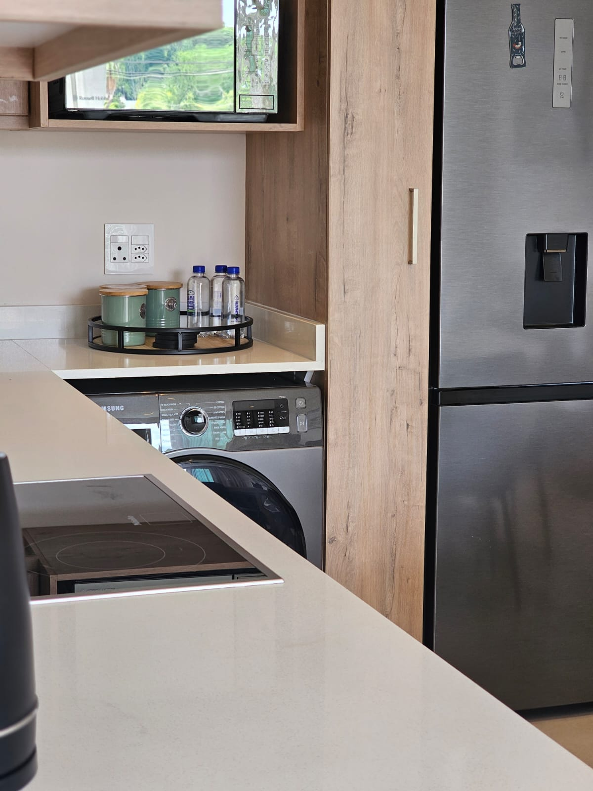
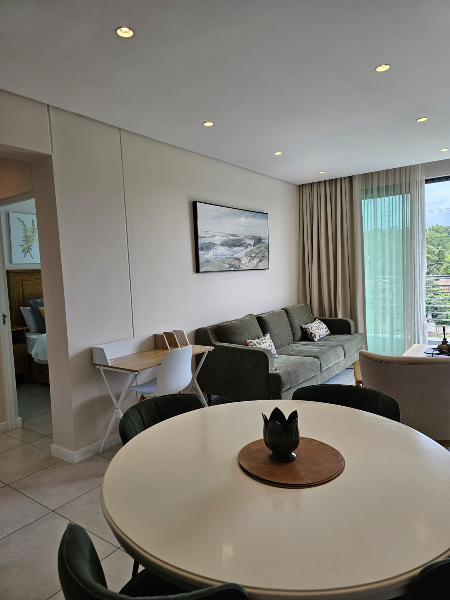
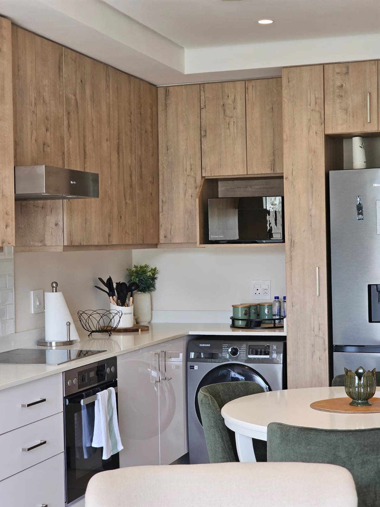
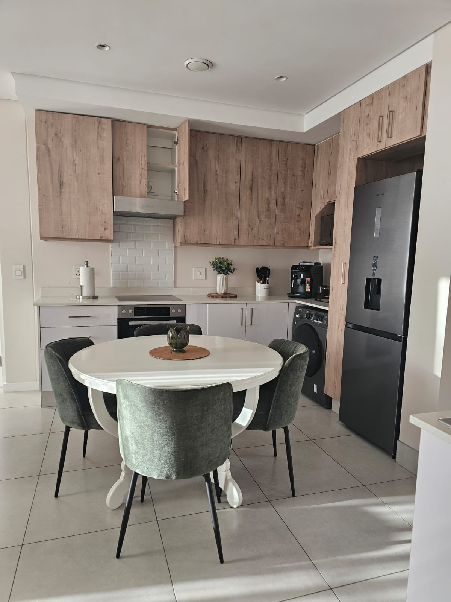
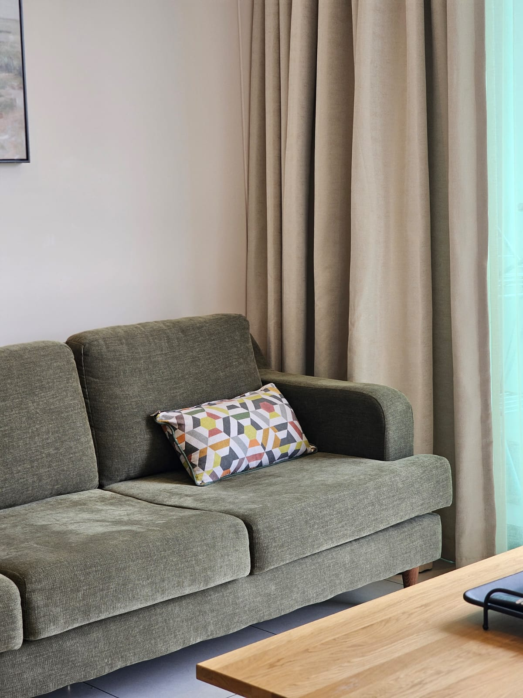
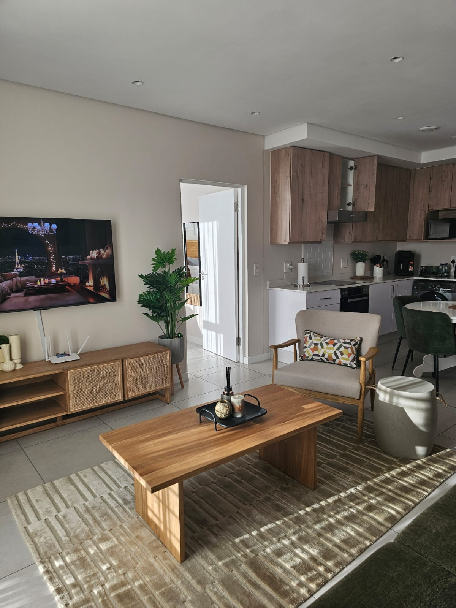
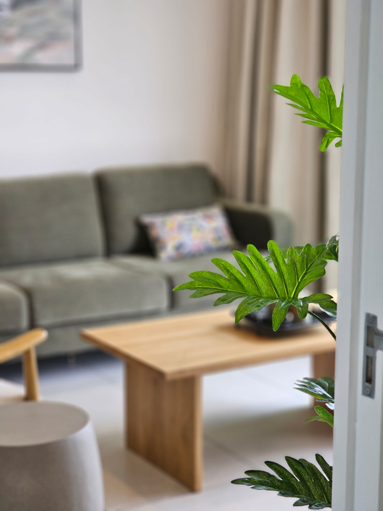
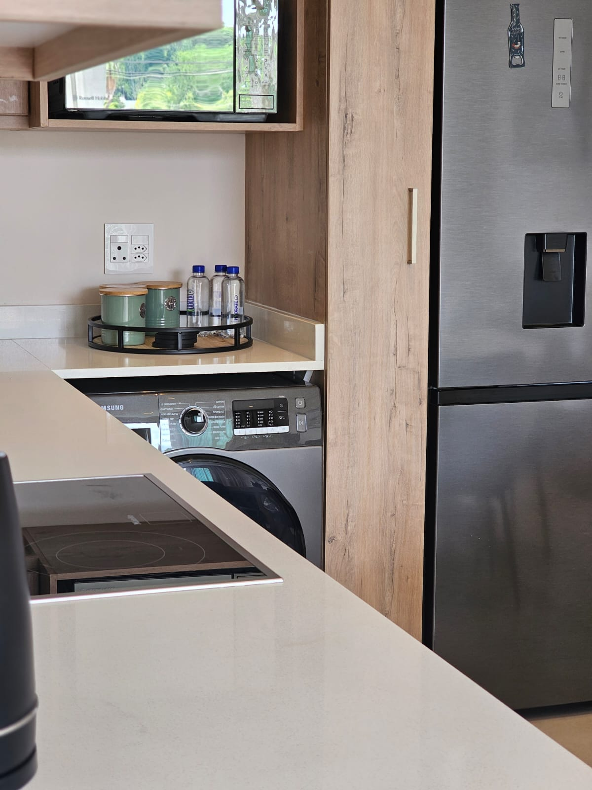
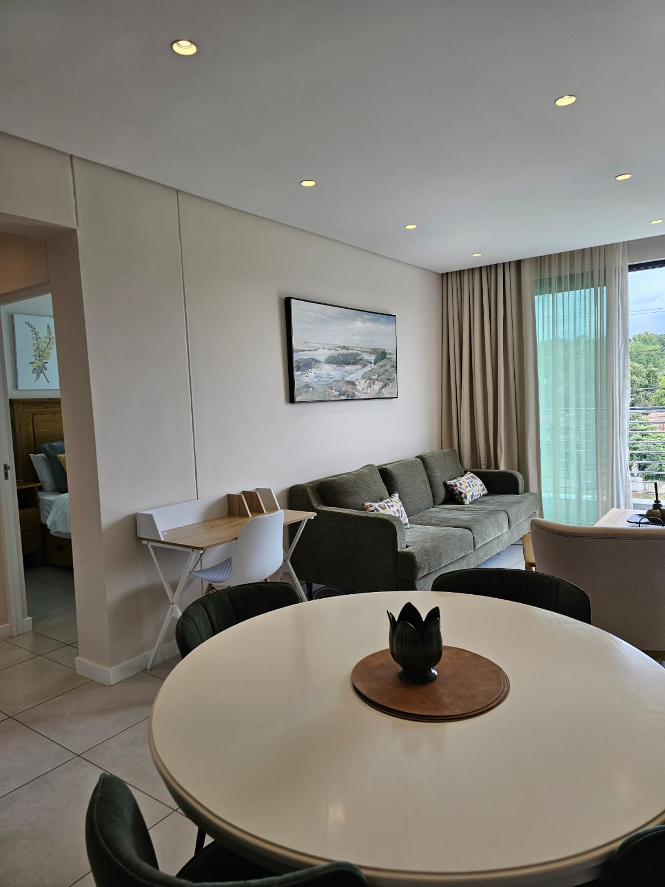
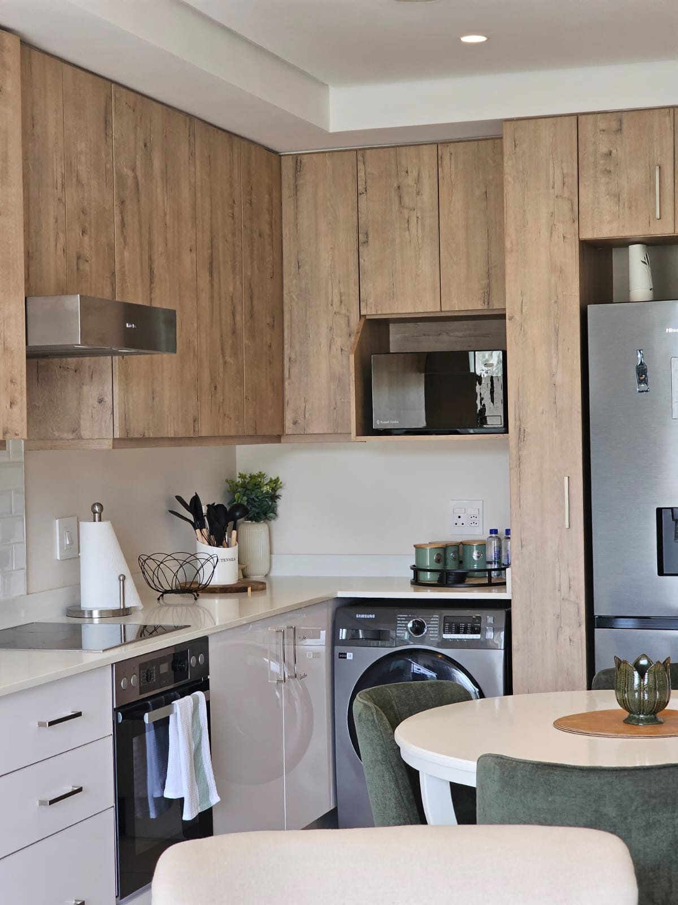